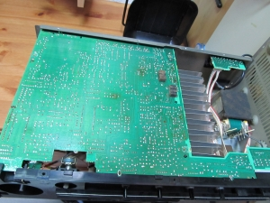
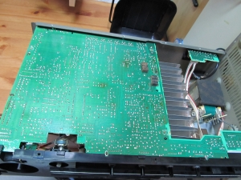
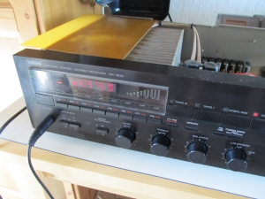
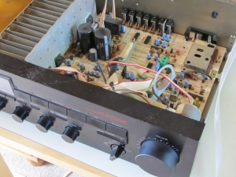

Reparatur von Elektogeräten
Auf dieser Seite widme ich mich der Reparatur aller möglichen Elektrogeräte. Leider ist es in unserer Wohlstandsgesellschaft in Mode gekommen defekte Geräte einfach wegzuwerfen anstatt sie in Reparatur zu geben oder gegegenfalls selbst zu reparieren.
Tipps zur Fehlersuche findet jeder Interessierte in diesem Wiki-Artikel Fehlersuche in Elektronik-Schaltungen.
Yamaha RX-500
Beim Sorgenkind handelt es sich um einen Verstärker mit UKW/MW-Tuner, Baujahr 1984-1988, also ein älteres Modell. Hier hat sich der Tuner verabschiedet, auch das Frontdisplay für die Frequenzanzeige leuchtet nicht mehr.
 

{kind=link}
Zuerst habe ich die Platine mit Druckluft grob gereinigt und eine erste Sichtprüfung durchgeführt, aufgeplatzte/ausgelaufene Elkos oder durchgebrannte Widerstände konnte ich keine finden. Nun zur Platinenrückseite: Im ersten Bild kann man unten ganz klar kalte Lötstellen sehen. Auch an anderen Stellen sind mir einige aufgefallen, die nur darauf gewartet haben wieder nachgelötet zu werden ;-).
 {kind=link}
{kind=link}
So nach getaner Arbeit hat habe ich den Receiver eingeschaltet und siehe da, der Tuner funktioniert auf Anhieb. Leider ist dies nicht immer der Fall.